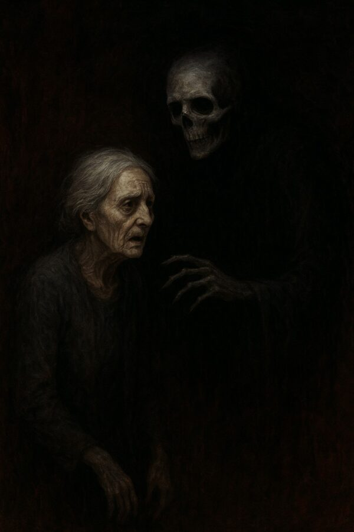

Back to Life

I was six years old when I first died.
I was playing in the park, running from swing to slide to climbing frame. I slipped, fell from a high place that probably had a faulty design with no safety taken into consideration, and broke my neck.
Next thing I remember I woke up on the ground, my body sore, my mother screaming and cradling me to her chest. I didn’t know what had happened, so I started crying, telling her how much I was hurting, asking for kisses on my boo boos.
By the time we finally got to the hospital, I was fine. My mother was almost strangling me, desperate to hold on to her little girl. She was sobbing and her mascara had run down her cheeks. I was holding my toy car and chatting about how much I love dinosaurs, the fall completely forgotten.
The doctor did an examination and eventually sent us home. There was nothing wrong with me. I had a few bruises like any other child my age. But I was healthy as a horse and bent on mischief, which was evidently a very good sign.
My mother kept mumbling about how I hadn’t been breathing for a few minutes, how I’d had no pulse, but nobody believed her. She’d been scared like any other parent would be in that situation, and confused. That’s what the medical staff told her.
We got home late that night and she sat in the rocking chair watching me fall asleep. I don’t know how long she’d been there that night, because when I woke up in the morning, there was a pancake scent filling the house and she was humming in the kitchen, sipping on her coffee and reading her crime book, like she always did. Knowing her, I think she must have kept vigil on that chair all night.
When it happened again, I was nine, and this time my mother refused to take shit from any doctor. I was a good child, but always bent on doing things I wasn’t supposed to do, so when I stupidly decided to go in the shed and climb the broken windows that were stored in there by the previous owners of the house, I wasn’t thinking about the consequences to my actions. Or about the danger. My mom had warned me about playing in there, telling me she still had to get around to cleaning that shed and throwing all that garbage away before somebody got really hurt.
But I was young and bored so I did it, and when my foot went through one of the windows, the glass breaking, my whole body plunging downward, I screamed, panic filling my mind.
It was a beautiful, cold, Spring day and my mother was in the garden, emptying the old pots and getting ready to plant new seeds for the season. She heard me and dropped her watering can. Her legs took a minute to start running, so when she finally reached me, I was already dead. A huge shard of glass had pierced my jugular.
There was a lot of blood everywhere.
My mother told me later on how she’d screeched and tried to move me, but I was stuck in there, my eyes rolled back, my tongue flopped out from my mouth, spit still dripping on my chin. She finally ran back inside and called an ambulance. She brought towels to stop my bleeding, but when she got back to me, she realized in horror I was not breathing or moving at all. She howled and placed her hand around my throat, careful not to move the piece of glass while doing so, because she’d seen in a movie once that if you move the object that has pierced any part of the body, you risk killing the victim. She didn’t feel any pulse and my chest was still.
So she grabbed me by the armpits and wrestled me out, cringing when the glass ripped open the skin on my arms and legs, through the clothes.
She placed me on her lap and rocked me like she used to do when I was a baby, and talked to me, asked me to come back like I had done when I was younger.
When she heard the sirens from the approaching ambulance and I was still not moving, she panicked and yanked the shard out quickly in one swift move. The blood had stopped flowing by now and when the paramedics burst through the unlocked door, they found us hugging, my arms wrapped around my mother’s throat, both of us sobbing, tears and blood mixing on our faces, combining in a cocktail between our entangled bodies.
The doctor that examined me told us I was lucky. I had only scratched my neck, arms and legs. It could have been worse. I could have died if any piece of the broken window had pierced through and gotten inside my body.
My mother listened calmly to all of that, nodding from time to time, and then she requested to talk to the doctor outside of the room. But I heard her screaming at him, her voice strong enough to be heard through the closed door. She told him I had died. She told him there had been a big chunk of glass in my neck. She told me she took it out. The doctor mumbled in response, probably not believing any word from the crazy, hysterical woman that was probably in shock.
Eventually she took me to bed, taking her place in the rocking chair just like she had done that first time when I broke my neck.
The next day, she sat me down at the table, placing a slice of bread with Nutella and chopped banana on top in front of me, and said:
‘Caroline, I think you died yesterday. As a matter of fact, I’m sure of it. Just like you did that time when you were six.’
I looked up at her, swallowed what I had in my mouth, wiped my lips with the tissue and replied:
‘It felt like sleeping.’
She watched me devour the rest of the food, giving me a glass of water at the end and cleaning the plate for me, which I found really weird since she always insisted I cleaned after myself.
‘It didn’t hurt. That’s good.’ She said.
I nodded, not sure what else I was supposed to say. I was still a child, but I wasn’t an idiot. Something did happen. Maybe I had lost my consciousness or something like that, but she seemed to be convinced about the dying part. So I waited for her to continue.
‘You had no pulse, no breathing. And you were still…. And heavy.’
I’d read somewhere that dead bodies seemed to weight more than the live ones, probably because all the muscles relax. But this still didn’t prove anything.
‘It was like a nap.’
She sat down next to me and grabbed my hand in hers:
‘Baby, don’t misunderstand me. This is a good thing. It means you will bounce back if, God forbid, anything happens to you. That’s a gift.’
A thought passed my mind then. Coming back to life was like a superpower.
‘But…’ she continued. ‘That doesn’t mean you shouldn’t be careful. You can still get badly hurt and… I’m not sure if you have a limited number of resurrections or maybe… what had happened might not repeat ever again. So you still need to be careful. You must promise me that you’ll not think you are invincible. Because you are not, baby. And my heart already thought you had died two times. I cannot take anymore of this. Promise me, Caroline!’
So I promised because what else was I supposed to do? She was right and while I still didn’t believe that I had died back there, I still thought something did happen. I also wanted her happy because she was a good mother and I loved her.
I died two more times before my mother had finally passed away when I was in my early twenties, and each time I had came back. One time I was hit by car and the other time, a rabid raccoon bit me. How much bad luck can a person have? I was careful, like I had promised my mom, but these things happened unexpectedly. And each time it took a little longer for me to come back to the land of the living.
After she went to Heaven (or whatever was out there! I still believed in an Afterlife, even though in all my experience with death I had never gotten any proof of anything), I started to be more reckless. I believed nothing could happen to me. I did bungee jumping, rode all the scary roller coasters, climbed mountains, jumped from planes with parachutes and opened them at the last possible second. Nothing happened. I continued to live and do stupid mistakes like falling in love with an older guy who was only interested in fucking, not building a future with me.
At twenty five, heartbroken and thinking my life was over because one man didn’t want to have me, I got into my bath and slit my wrists. I had researched first, and took strong painkillers before sliding the sharp knife on my thin skin.
It took a while for me to die. First I become numb, sleepy. And then came the darkness, enveloping me completely. I welcomed it, wondering if I’d be cold when I woke up.
Hoping I wouldn’t wake up this time.
But, as usual, I bounced back. And when I opened my eyes, the first thing I noticed was the darkness in the room. And then the stench filled my nose and made me gag.
Apparently, sometime in the process of dying I had soiled myself. And judging by the way it felt under my bum, dried and painfully stuck to my skin, that had been a while ago.
I presumed a few hours had passed, day making room to the night. I got up from the bath tub and cringed when I felt the heaviness at the back of my pants.
Fucking disgusting death is.
I cleaned myself in the same bath I’d used to slit my wrists open, throwing my clothes into a black bin bag. I scrubbed until my skin was raw red and even then I still felt like I was stinking. I oiled my body and got into fresh, washed clothes, and then I took the bag with my dirty clothes to the garbage chute, letting it drop down and waiting to hear it hitting the huge bin at the bottom. I hoped the garbage truck would collect the waste soon.
After that, I went to my drinks cupboard, grabbed the bottle of whiskey, opened it and took a big sip. I sat on the floor and urged my tears to come. I wanted to cry, to scream, to curse at God. But nothing came out.
After a while, I got up, put the bottle back in its place and grabbed my phone from its charging place.
I had twenty-three messages on Whatsapp and seven missed calls from my best friends. And they were all from two and three days ago.
I stared at the date at the top of the screen for a long time before the realization finally sunk in.
I had been dead for four days.
After that, years passed without any event. I finished school, got my master’s degree and landed a pretty good job in the capital. I had a good salary and enough time to enjoy reading and playing on my playstation. At some point, I met Ben, and married him. We tried for kids but nothing came out of it. We got tested and found out I was infertile.
It didn’t affect me as much as I thought it would, but it shattered Ben. He had always wanted children of his own.
I suggested we adopt, but the process was lengthy and very pricey.
Eventually, I told him we could try surrogacy. He refused. He said he would feel like he cheated. That was bullshit and I argued with him. But at the back of my mind, I felt relieved.
I didn’t want any children.
I got pregnant when I was forty and lost the baby in my second trimester. I held her small body in my arms and cried as she took her last, raspy breaths. I wondered if it hurt. Struggling to breathe with undeveloped lungs.
Ben died from a heart attack when he was sixty-eight. I watched him go and never come back. I buried him with a charged phone and a radio just in case, but of course he didn’t need them.
Left alone, I tried my best to live the rest of my life happily. I cooked, walked, met with friends for dinner and coffee. I read a lot.
At seventy eight I died again, old age finally getting at me. I wasn’t sick in any way, but my body was getting frail, the skin was not elastic anymore, the lines deep, the bones brittle.
I woke up a week later, in a body bag.
Realizing where I was, I started trashing and screaming, tearing at the bag, but the zip wouldn’t open, and the material was too strong for me to rip.
I heard something like metal objects clattering onto the floor. And then I heard a door screeching and my whole body got wheeled out of the morgue refrigerator.
The medical examiner opened the bag and covered his mouth with his gloved hand. I was looking straight at him. His assistant fainted, hitting her head in the process, blood gathering around her face. The doctor didn’t even notice it.
‘Help her,’ I mumbled, trying to get up. The man turned around and only then realized his younger colleague was sprawled on the tiled floor. He checked her pulse and called for help.
I stood there, stiff as a stone, cold as an iceberg, and watched the nurses and the doctors take care of the young woman, feeling like it had been my fault she got hurt. When she was finally stable, they took her to the emergency room and I was left once again with the man who had opened the bag. He helped me up and brought a wheelchair for me to sit on. He kept repeating how sorry he was.
I told him he didn’t do any mistake. I had been dead. His primary examination had been correct. But I was still grateful there had been a backlog and my body had been waiting in line for the autopsy.
I feared how it would have felt for me to come back into a cut up body.
They kept me under observation for a few days, but eventually they had to let me go back to the nursing home.
Months passed, uneventful.
Then one October afternoon, my heart stopped beating. I was in the garden, looking up at the sky, wondering how far from us would other planets with life be. Then the pain hit and all logical thought left my brain as agony engulfed me.
The whole thing lasted only a few minutes. The nurse that was supervising me, came running, but as her fingers touched my neck, my soul departed my body again, and I had time just for one more thought: how many days would pass this time before I wake up again in this dying body?
When I finally came back, I was laying on something soft. I couldn’t open my eyes and my stomach hurt.
Christmas songs were playing somewhere close.
I tried to move, but realized I couldn’t. Something touched my cheek and I jolted. Or at least I thought I did, my mind sent the electrical impulses, but my body didn’t cooperate.
Then I heard it.
‘Please, mom, come back. Please, I would do anything. I can’t live without you. I need you, mommy.’
Who was this woman talking to?
I urged my body to move, but to no success.
I felt arms circling and lifting me. A warm, young body was now pressed against my face. I heard the beating of the heart, I felt the breath of the woman on my forehead. I didn’t understand what was happening. I didn’t know who she was.
I wanted to shake her, to ask all my questions.
I couldn’t move.
I couldn’t even open my eyes.
And then her lips touched my ear and she whispered: ‘Did you have fun? Would you like to go again? But this time… let’s do it from the other side.’
I woke up.
It’s Christmas now. I can hear the children giggling, unwrapping their presents, throwing the paper everywhere, screaming in delight with every new toy. The smell of food is overwhelming. I don’t know how much time has passed since I last ate.
It’s always the same. I am here, in this nothingness and then I am there. I am a child, a teenager, a young woman, an old one. I blink and then I’m back here again. I don’t remember much. Just the first few seconds in that life, being somebody. And everytime I come back here, it feels like dying again and again and again, for all eternity.
I am left alone, in this place. Forgotten.
I don’t even know how I haven’t lost my sanity yet. Maybe the entity that’s playing with me decided I’m more fun sane. Maybe it’s God. Maybe it’s the opposite of that. I will never know.
I have always loved Christmas. I have always loved giving and getting presents. Who doesn’t?
I only wish for one last gift.
I wish I’ve never been born.

Comments